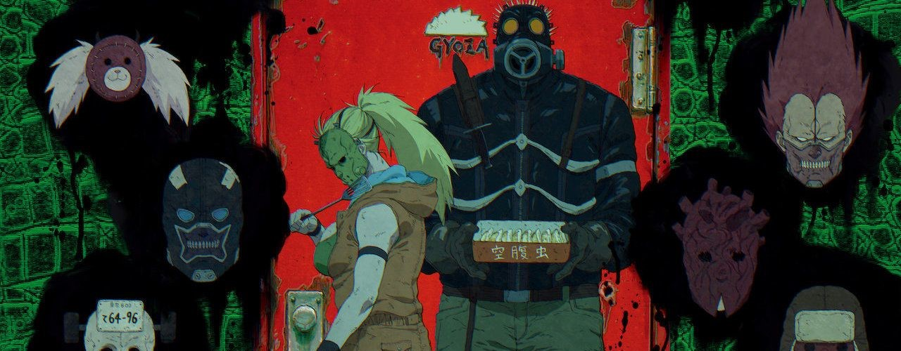
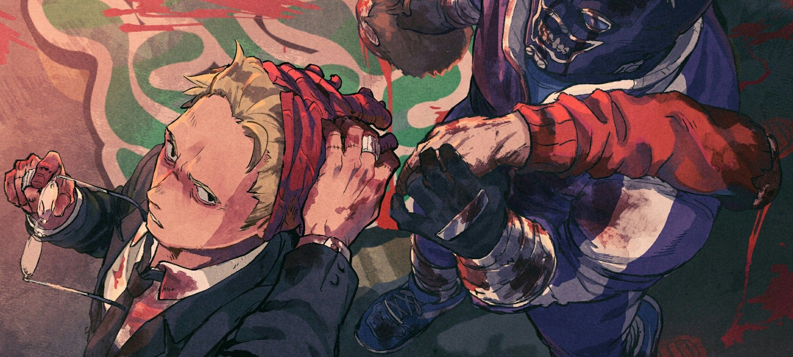
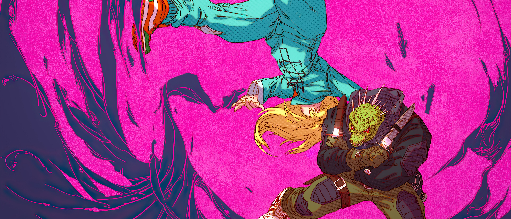
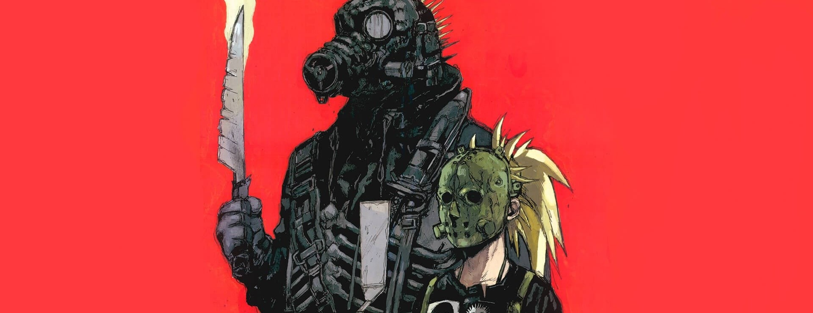

ARTE VISUAL





Dorohedoro es un anime y manga de acción, ciencia ficción y fantasía oscura creado por Q Hayashida. La serie se desarrolla en un mundo distópico dividido entre "Hole", una ciudad desolada y caótica, y un reino habitado por hechiceros. La historia sigue a Caimán, un hombre con cabeza de reptil que sufre de amnesia tras ser víctima de un hechizo. Junto con su amiga Nikaido, busca a los hechiceros responsables para recuperar su memoria y revertir su condición. La trama combina violencia, humor oscuro y magia, mientras explora temas de identidad y poder. El manga comenzó a publicarse en el año 2000 y finalizó en el 2018. La adaptación al anime fue lanzada en enero del 2020, producida por el estudio MAPPA.
Se usó CGI para los personajes en muchas escenas, especialmente en las secuencias de acción, mientras que los fondos y algunos detalles se animaron en 2D. Esto crea un contraste que refleja el tono caótico y distópico del mundo de Dorohedoro. El uso del CGI permitió representar de manera más fluida las complejas y violentas batallas, así como el ambiente sombrío de "Hole", sin perder la estética cruda y detallada del manga original. Aunque el CGI puede sentirse diferente a lo habitual en el anime, en Dorohedoro complementa bien su naturaleza surrealista y de ciencia ficción.



